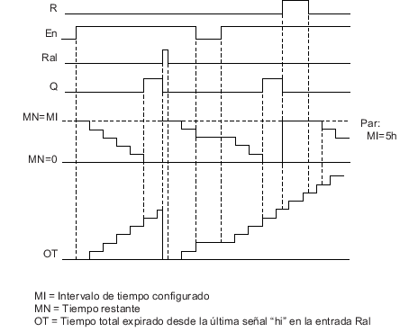
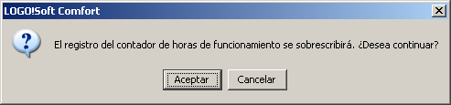
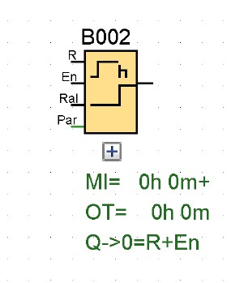

CONTADOR DE HORAS DE FUNCIONAMIENTO
Descripción Breve
Al activarse la entrada de vigilancia, comienza a transcurrir un tiempo configurado. La salida se activa una vez expirado este tiempo.
| Conexión | Descripción |
|---|---|
| Entrada R | Un flanco ascendente (cambio de 0 a 1) en la entrada R desactiva la salida Q y pone el contador al valor configurado MI durante el tiempo restante (MN). |
| Entrada En | En es la entrada de vigilancia. LOGO! mide el tiempo durante el que está activada esta entrada. |
| Entrada Ral | Un flanco ascendente en la entrada Ral (Reset all) desactiva el contador de horas de funcionamiento (OT) y la salida. Además, el valor del tiempo restante (MN) se ajusta al intervalo de mantenimiento configurado (MI):
|
| Parámetro | MI: Intervalo de mantenimiento que debe especificarse en unidades de horas y minutos
Rango de valores: 0000 h a 9999 h, 0 m a 59 m OT: Tiempo de funcionamiento total acumulado. Se puede determinar un tiempo de inicio de offset en horas y minutos. Rango de valores: 00000 h a 99999 h, 0 m a 59 m Q → 0:
|
| Salida Q | Cuando el tiempo restante MN = 0 se activa la salida. La salida se desactiva:
|
Parámetro MI
El intervalo de mantenimiento MI también puede ser el valor real de otra función preprogramada:
- Comparador analógico: Ax - Ay
- Conmutador analógico de valor umbral: Ax
- Amplificador analógico: Ax
- Multiplexor analógico: AQ
- Rampa analógica: AQ
- Instrucción aritmética: AQ
- Regulador PI: AQ
- Contador adelante/atrás: Cnt
- Retardo a la conexión: Ta
- Retardo a la desconexión: Ta
- Retardo a la conexión/desconexión: Ta
- Retardo a la conexión con memoria: Ta
- Relé de barrido (salida de impulso): Ta
- Relé de barrido activado por flancos: Ta
- Generador de impulsos asíncrono: Ta
- Interruptor de alumbrado para escalera: Ta
- Interruptor multifuncional: Ta
- Cronómetro: AQ
- Filtro analógico: AQ
- Valor medio: AQ
- Máx/Mín: AQ
- Selector de umbral: Fre
Cronograma

Estos valores son siempre remanentes.
Descripción de la función
El contador de horas de funcionamiento vigila la entrada En. Mientras el estado de señal de esta entrada sea 1, LOGO! calcula el tiempo transcurrido y el tiempo restante MN. LOGO! visualiza estos tiempos en el modo de configuración. Si el tiempo restante es igual a cero, la salida se pone a 1.
Una señal en la entrada R desactiva la salida Q y el contador del tiempo restante adopta el valor especificado MI. El contador de horas de funcionamiento OT no varía.
Una señal en la entrada Ral desactiva la salida Q y el contador del tiempo restante adopta el valor especificado MI. El contador de horas de funcionamiento OT se pone a 0.
Dependiendo de la configuración del parámetro Q, la salida se desactiva con una señal de reset en la entrada R o Ral ("Q → R"), o bien, si la señal de reset es 1 o si la señal En es 0 ("Q → R+En").
Visualizar los valores MI, MN y OT
Los contadores de horas de funcionamiento se pueden leer en LOGO!Soft Comfort mediante el comando de menú Herramientas → Transferir → Contador de horas de funcionamiento.
Valor límite de OT
El valor de las horas de funcionamiento en OT se conserva cuando se inicializa el contador de horas de funcionamiento con una señal en la entrada R. El contador de horas de funcionamiento OT se pone a cero cuando el estado de señal de Ral cambia de 0 a 1. El contador de horas sigue contando mientras En = 1, independientemente del estado de la entrada de desactivación R. El valor límite del contador OT es 99999 h. El contador de horas se para cuando alcanza este valor.
El valor inicial de OT se puede ajustar en modo de programación. MN se calcula según la fórmula siguiente, si la entrada de reset R no está habiliada nunca: MN = MI - (OT % MI). El operador % provee un resto de la división entera.
Ejemplo:
MI = 30h, OT = 100h
MN = 30 - (100 % 30)
MN = 30 -10
MN = 20h

En modo runtime, el valor OT no puede predeterminarse. Si se cambia el valor de MI no habría ningún cálculo del MN. MN adoptaría el valor de MI. Parámetros estándar
En LOGO!Soft Comfort puede especificar MI y un valor inicial para OT.
Si activa la casilla de verificación correspondiente, determinará que Q no depende de En Remanencia en el contador de horas de funcionamiento
El contador de horas del LOGO! es remanente.
Si los valores del contador de horas se pierden tras un corte de alimentación, seleccione el respectivo bloque en el programa. Haga clic con el botón derecho del ratón en el contador de horas y seleccione Propiedades del bloque > Parámetro. La opción Remanencia debe estar activada sin poder modificarse (es decir, debe aparecer atenuada).
Si la opción Remanencia no está disponible, borre el bloque e inserte una nueva función especial Contador de horas de funcionamiento en esa misma posición.
 |
0BA0-0BA5: El intervalo de mantenimiento (MI) y el tiempo de inicio del contador de horas de funcionamiento (OT) se indicaban en horas. |
Si se descarga un programa que integre una función de contador de horas de LOGO!Soft Comfort a un módulo base LOGO! 0BA7 o LOGO! 0BA8, LOGO!Soft Comfort le pedirá si debe continuar o no. Si confirma la transferencia y continúa, el valor del contador de horas de funcionamiento se resetea.

EJERCICIOS
EJERCICIO 1
- Un botón enciende un motor, este dura 2 minutos en encenderse, y dura encendido por completo una vez cumplido este tiempo.
- Cuenta con un botón que resetea su tiempo.
- El motor cuenta con luces que indican su funcionamiento.
EJERCICIO 2
- Una botón enciende un motor que dura 1 minuto en calentarse completamente y funcionar, una vez pasando este tiempo se puede apagar y prender normalmente sin esperar este tiempo, hasta presionar un apagado completo del motor.
- Al estar funcionando enciende 1 foco para visualizar su funcionamiento.
- Al estar activo activa un pistón que sube y baja, este dura 5 segundos comprimiéndose y 3 segundos alzándose para funcionar, hay un led que podemos observar para ver su funcionamiento, solo que este avisa el tiempo al revés.



Contador de horas de funcionamiento
Solución del ejercicio 1
Solución del ejercicio 2